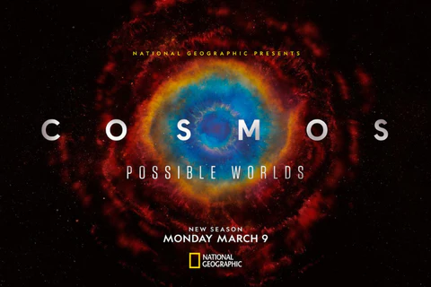

|

|
Cosmos
Cosmos: Possible Worlds, 9 Mart 2020 tarihinde National Geographic'te yayınlanmış Amerikan yapımı bir televizyon belgeselidir. Dizi, Carl Sagan tarafından 1980'de PBS'de yayınlanan orijinal Cosmos: A Personal Voyage serisini takip ed Dizi,en 2014 televizyon dizisi Cosmos: A Spacetime Odyssey'in devamı niteliğindedir. Ann Druyan ve Brannon Braga tarafından yazılan, yönetilen ve yürütücü yapımcılığını üstlendiği dizi, astrofizikçi Neil deGrasse Tyson tarafından sunulmuştur. Diğer yönetici yapımcılar ise Seth MacFarlane ve Jason Clark'tır.
|